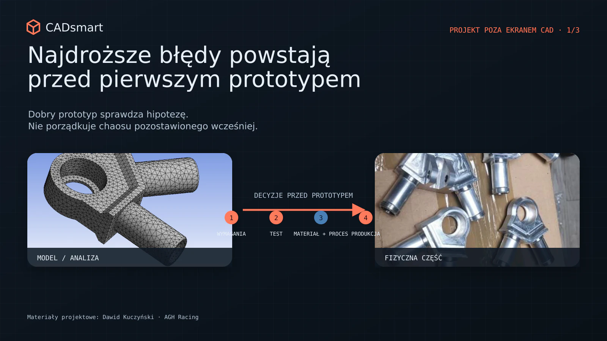
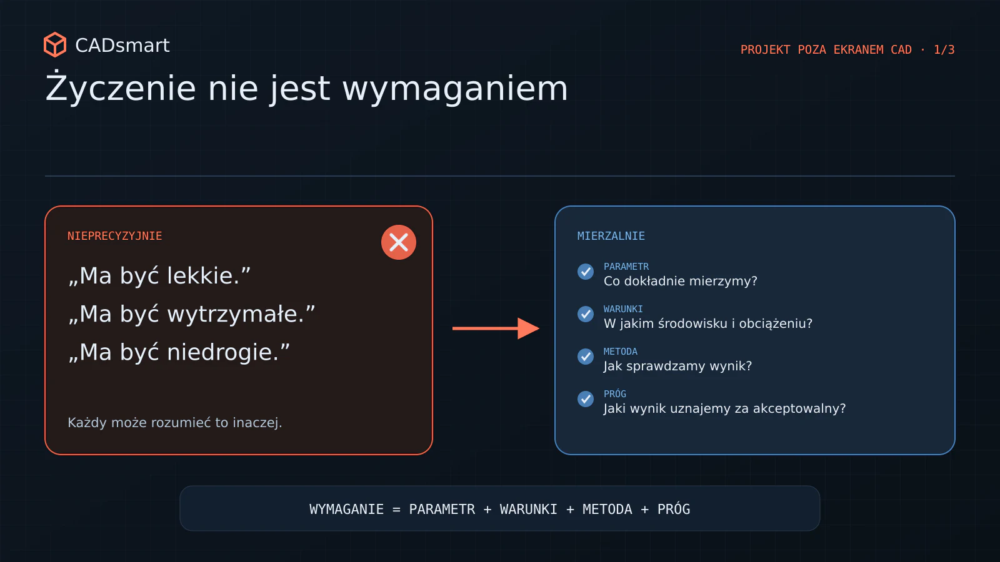
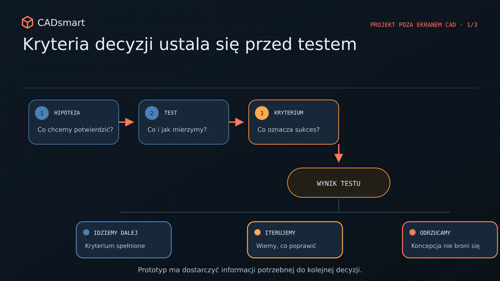
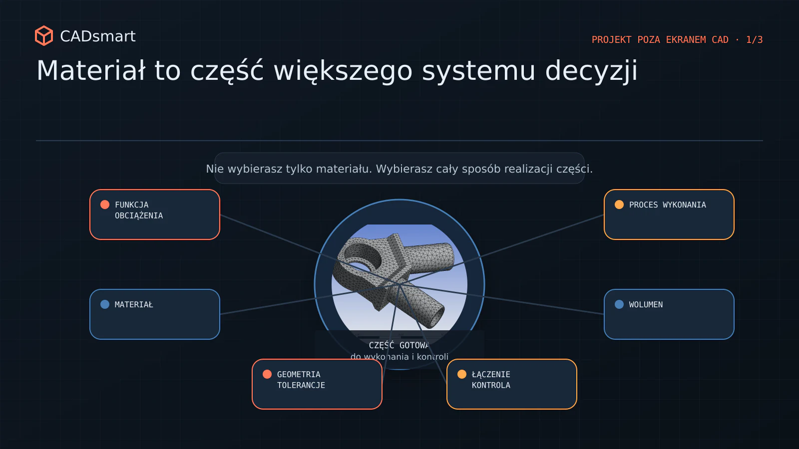
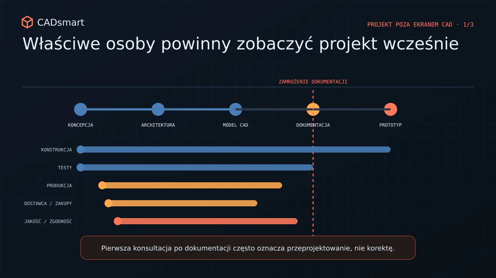

Najdroższe błędy powstają przed pierwszym prototypem
Jak doprecyzować wymagania, testy, materiały i realia produkcji, zanim projekt wejdzie w kosztowne iteracje prototypowe.

Zanim powstanie pierwszy prototyp
Pierwszy prototyp często traktujemy jak moment, w którym projekt po raz pierwszy naprawdę styka się z rzeczywistością. To wtedy widać, czy mechanizm działa, części do siebie pasują, a urządzenie spełnia podstawowe założenia. Problem w tym, że wiele najdroższych błędów powstaje znacznie wcześniej. Nie podczas obróbki, montażu ani testów, lecz wtedy, gdy zespół podejmuje pierwsze decyzje: co właściwie ma powstać, w jakich warunkach ma działać, jak ocenimy wynik i jak produkt będzie wykonany.
Jeśli te decyzje pozostają niejasne, model CAD może być poprawny, prototyp może wyglądać przekonująco, a projekt i tak zacznie się rozjeżdżać. Kolejne iteracje nie rozwiązują wtedy pojedynczego problemu technicznego. Próbują nadrobić brak wspólnej definicji produktu. Przed rozpoczęciem kosztownego projektowania warto więc zamknąć cztery obszary: mierzalne wymagania, kryteria akceptacji, powiązanie materiału z technologią oraz udział produkcji i dostawców. Nie chodzi o stworzenie perfekcyjnej specyfikacji. Chodzi o to, by zespół wiedział, które decyzje są świadome, a które nadal pozostają hipotezą.
1. Wymaganie, którego nie da się zmierzyć, trudno zweryfikować
„Ma być wytrzymałe”, „łatwe w montażu”, „możliwie lekkie” albo „niedrogie w produkcji” brzmią jak wymagania. W praktyce są raczej kierunkami. Każdy członek zespołu może rozumieć je inaczej. Dla konstruktora „lekkie” może oznaczać redukcję masy o 15 procent. Dla Product Managera - brak problemów w transporcie. Dla użytkownika - możliwość przeniesienia urządzenia jedną ręką. Każda z tych interpretacji prowadzi do innych decyzji materiałowych, konstrukcyjnych i kosztowych.
Nieprecyzyjne wymagania mają jeszcze jedną cechę: konflikty między nimi ujawniają się późno. Produkt ma być jednocześnie sztywny, lekki, tani, odporny na warunki zewnętrzne i dostępny w krótkim terminie. Tego zestawu nie da się rozwiązać samym modelowaniem. Trzeba ustalić priorytety i zaakceptować kompromisy. Dlatego dobry brief techniczny nie powinien być listą życzeń. Powinien odpowiadać między innymi na pytania:

- jaką funkcję produkt ma realizować i w jakich warunkach;
- które parametry są krytyczne, a które można negocjować;
- jaki jest dopuszczalny koszt wytworzenia i na jakim wolumenie;
- jakie ograniczenia wynikają z gabarytu, masy, transportu, zasilania lub otoczenia;
- co oznacza „wystarczająco dobrze” dla pierwszej wersji produktu.
Budżet należy potraktować jak wymaganie techniczne, a nie temat do sprawdzenia na końcu. Jeżeli konstrukcja od początku zmierza w stronę procesów, materiałów lub tolerancji nieadekwatnych do planowanego wolumenu, późniejsza „optymalizacja kosztowa” może oznaczać faktyczne przeprojektowanie produktu.
2. Kryteria akceptacji trzeba ustalić przed testem, nie po nim
Prototyp nie odpowie na pytanie, którego wcześniej nie zadaliśmy. Może działać podczas prezentacji, przejść kilka prób i nadal nie dostarczyć zespołowi informacji potrzebnej do podjęcia decyzji. „Działa” jest szczególnie niebezpiecznym wynikiem, ponieważ brzmi jak zamknięcie tematu. Tymczasem może oznaczać wyłącznie, że jeden egzemplarz zadziałał raz, w konkretnych warunkach i przy udziale osób, które znały jego ograniczenia.
Kryteria akceptacji porządkują tę niepewność. Określają, jaki wynik uznajemy za pozytywny, w jakich warunkach prowadzimy test, co mierzymy i jaka decyzja nastąpi po wyniku pozytywnym lub negatywnym. W praktyce warto rozdzielić co najmniej trzy pytania:

- Czy rozwiązanie realizuje funkcję?
- Czy realizuje ją w wymaganym zakresie i warunkach?
- Czy wynik jest wystarczająco powtarzalny, aby przejść do kolejnego etapu?
Takie rozróżnienie zmienia sposób projektowania prototypu. Jeżeli celem pierwszej iteracji jest sprawdzenie obciążenia i sztywności, nie trzeba od razu inwestować w wykończenie przypominające produkt seryjny. Jeśli celem jest ocena montażu, prototyp musi odwzorować interfejsy, dostęp narzędzi i kolejność operacji. Jeżeli zespół ma porównać warianty, potrzebuje wspólnej metody oraz tych samych warunków testowych.
W projektach, w których przygotowywałem protokoły testowe, raporty, kryteria akceptacji i oprzyrządowanie testowe, największą wartością nie był sam dokument. Ważne było uzgodnienie przed próbą, czego właściwie chcemy się dowiedzieć. Dzięki temu test stawał się narzędziem decyzyjnym, a nie tylko wydarzeniem w harmonogramie.
3. Materiału nie wybiera się w oderwaniu od procesu
Wybór materiału bywa sprowadzany do porównania właściwości mechanicznych. Tymczasem materiał jest częścią większego systemu decyzji. Liczy się nie tylko to, co wytrzyma, lecz także jak zostanie uformowany, połączony, wykończony, skontrolowany i pozyskany. Ta sama funkcja może zostać zrealizowana przez element frezowany, gięty z blachy, odlewany, spawany albo wykonany z tworzywa. Każda technologia tworzy inną geometrię, inne ograniczenia, tolerancje, koszty uruchomienia i ryzyka dostaw.
W pierwszym prototypie frezowana część może być najszybszą drogą do sprawdzenia funkcji. Nie oznacza to jednak, że geometria zoptymalizowana pod obróbkę skrawaniem będzie właściwa dla odlewu lub formowania wtryskowego. Jeżeli docelowy proces jest znany, warto uwzględnić jego logikę możliwie wcześnie. W przeciwnym razie sukces prototypu może tylko odsunąć moment kosztownego przeprojektowania. Pracując nad systemami złożonymi z tworzyw wtryskowych, blach, odlewów i części obrabianych, wielokrotnie widziałem, jak decyzja materiałowa wpływa na cały produkt. Zmienia sposób podparcia, połączenia, prowadzenia kabli, kolejność montażu, dostępność komponentów i plan testów. Dlatego ocena materiału powinna obejmować równocześnie:

- funkcję i obciążenia;
- docelową technologię oraz przewidywany wolumen;
- tolerancje możliwe do utrzymania w procesie;
- dostępność półproduktu i dostawców;
- sposób łączenia z innymi częściami;
- wykończenie, środowisko pracy i serwis;
- koszt całego rozwiązania, a nie tylko cenę kilograma materiału.
4. Produkcja i dostawcy nie powinni oglądać projektu po raz pierwszy na końcu
Zespół projektowy nie musi znać wszystkich szczegółów każdego procesu. Musi natomiast wiedzieć, kiedy zaprosić do rozmowy osoby, które te szczegóły znają. Zbyt późna konsultacja z produkcją lub dostawcą często nie kończy się drobną korektą. Może ujawnić niedostępne narzędzie, niewłaściwy promień gięcia, problem z oprzyrządowaniem, trudną kontrolę wymiaru, niepraktyczną tolerancję albo komponent o nieakceptowalnym terminie dostawy.
Wczesne zaangażowanie partnera produkcyjnego nie oznacza przekazania mu odpowiedzialności za konstrukcję. To sposób na szybsze poznanie ograniczeń. Krótka rozmowa na etapie koncepcji bywa bardziej wartościowa niż rozbudowany przegląd wtedy, gdy dokumentacja jest już gotowa, a termin prototypu uzgodniony. Podobnie należy traktować wymagania regulacyjne i bezpieczeństwa. Nie każdy projekt jest regulowany, ale jeśli produkt działa w określonym środowisku, styka się z użytkownikiem, energią elektryczną, obciążeniami lub ryzykiem niewłaściwego użycia, wymagania te powinny wpływać na architekturę od początku. Sprawdzanie ich dopiero przed wdrożeniem może podważyć wcześniejsze decyzje konstrukcyjne.
Dobrym minimum jest przegląd koncepcji z reprezentantami konstrukcji, testów, produkcji, zakupów i - gdy to potrzebne - jakości lub zgodności. Nie chodzi o duże spotkanie statusowe. Chodzi o wychwycenie założeń, które jedna funkcja uważa za oczywiste, a druga za nierealne.

Prototyp powinien sprawdzać hipotezy, nie porządkować chaos
Nie da się usunąć całej niepewności przed pierwszym prototypem - i nie taki jest cel. Rozwój produktu zawsze wymaga iteracji. Różnica polega na tym, czy iterujemy świadomie wokół konkretnej hipotezy, czy wykorzystujemy kolejne prototypy do odkrywania podstawowych wymagań.
Przed rozpoczęciem modelowania i zamówieniem części warto potwierdzić pięć rzeczy:
- krytyczne wymagania są mierzalne i mają właścicieli;
- priorytety oraz kompromisy są jawne;
- wiadomo, co i jak będzie testowane;
- materiał rozpatrzono razem z procesem, wolumenem i łańcuchem dostaw;
- produkcja, dostawcy i wymagania bezpieczeństwa zostały zaangażowane na właściwym etapie.
Jeżeli te elementy są uporządkowane, pierwszy prototyp nie musi być doskonały. Musi dostarczyć informacji, które pozwolą zespołowi podjąć kolejną dobrą decyzję.
Rozwijasz produkt mechaniczny i chcesz sprawdzić, czy jego założenia są gotowe do przejścia w projekt lub prototyp? Mogę pomóc w przeglądzie wymagań, planu testów, architektury mechanicznej i ryzyk produkcyjnych przed rozpoczęciem kosztownych iteracji.
Sprawdź swój projekt
Chcesz przełożyć wnioski z artykułu na własny projekt?
Rozwiń 9 pytań kontrolnych
- Czy dla każdej kluczowej funkcji określono mierzalny parametr, dopuszczalny zakres oraz warunki, w których ma zostać spełniony?
- Czy wymagania mają ustalone priorytety i wiadomo, z czego można zrezygnować, gdy masa, koszt, termin lub trwałość zaczną się ze sobą konfliktować?
- Czy założenia kosztowe odpowiadają planowanemu wolumenowi i obejmują narzędzia, montaż, kontrolę, odpady oraz wykończenie, a nie tylko cenę części?
- Jaką konkretną hipotezę ma sprawdzić prototyp i jaka decyzja nastąpi po wyniku pozytywnym, negatywnym lub niejednoznacznym?
- Czy plan testu określa konfigurację prototypu, warunki próby, mierzone wartości, dokładność pomiaru oraz jednoznaczne kryterium zaliczenia?
- Czy geometria, tolerancje, połączenia i sposób kontroli są osiągalne oraz ekonomicznie uzasadnione dla wybranego procesu produkcyjnego?
- Czy przeanalizowano skrajne kombinacje tolerancji oraz ich wpływ na montaż, luzy, docisk i działanie produktu?
- Czy produkt można zmontować, skontrolować i serwisować przy użyciu rzeczywistych narzędzi, w zaplanowanej kolejności i bez wiedzy dostępnej tylko konstruktorowi?
- Czy produkcja, jakość, zakupy i kluczowi dostawcy ocenili projekt, a ryzyka dotyczące dostępności, terminów, bezpieczeństwa i zgodności mają właścicieli oraz dalsze działania?
Chcesz zachować pytania na później?